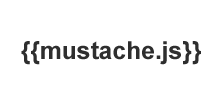
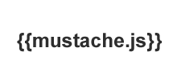
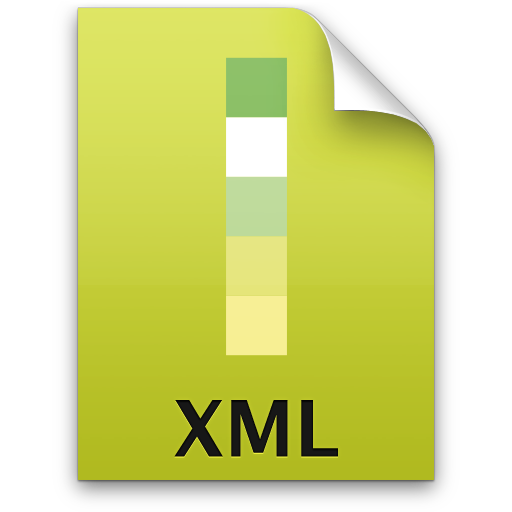
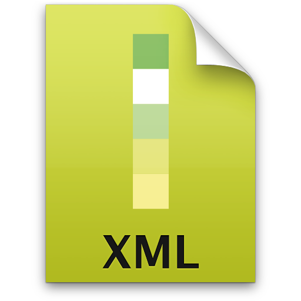

JQuery is a JavaScript function library used to interact with HTML, used in more than 70% of the most visited sites in the world and is the most popular JavaScript library. It is designed to make it easier to navigate the HTML document, from selecting DOM elements, creating animations, manipulating events, and developing AJAX applications. These facilities allow programmers to create layers of abstraction for low-level interactions in a simplified way in dynamic web applications of great complexity.
Asynchronous JavaScript and XML is the methodological use of technologies like JavaScript and XML, to make web pages more iterative with the user, with the use of asynchronous requests of information. Multiple requests can be made to the server, and the site does not stop waiting for the responses. The answers obtained can be both XML and JSON, the latter has been more used in recent times, and for transferring information that is not standardized. XMLHttpRequest has an important role in ajax web development technique to communicate with server-side scripts.
JavaScript Object Notation is an open, compact, open standard format for simple and fast interchange of data between systems. It is a model of information transmission in text format, much used in web services that uses representational state transfer (REST) and AJAX applications.
Extensible Markup language é uma linguagem de marcação para necessidades especiais, capaz de descrever diversos tipos de dados, e de fácil partilha de informação pela internet. Utilizado para enviar informação padronizada e que tenha que respeitar um determinado de regras, como é o caso de informação que tenha de ser enviada para departamentos de finanças entre outros.
Hypertext Preprocessor is a general purpose open source scripting language, but more used for web development and can be embedded in HTML.
What distinguishes PHP from JavaScript is that the code runs on the server side and the client only sees HTML, which is good for hiding more specific business rules.
 


 
